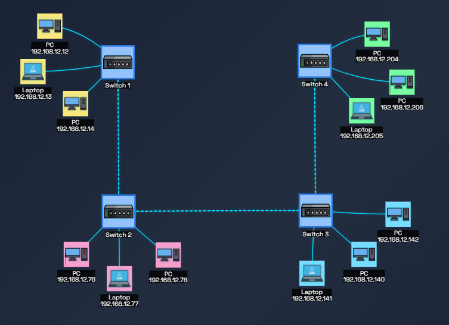

Aprenda sobre redes e sub-redes de forma progressiva
Comece aqui se você nunca estudou redes antes
Definição simples: Uma rede de computadores é um conjunto de dispositivos (computadores, celulares, servidores) conectados entre si para compartilhar informações e recursos como dados, arquivos e internet.
Analogia: Pense na rede como o sistema de infraestrutura de uma cidade:
Exemplos práticos:
Componentes de rede são todos os elementos físicos (hardware) e lógicos (software) que trabalham juntos para permitir a conexão e a troca de informações.
Componentes:O que são bits? Bits são a menor unidade de informação (0 ou 1). Computadores só entendem binário!
Por que isso importa em redes?
Cada número do IP (0-255) é representado por 8 bits em binário.
Decimal: 192
Binário: 11000000
Decimal: 168
Binário: 10101000
Tabela de conversão de pesos (valores de cada posição):
| Posição: | 128 | 64 | 32 | 16 | 8 | 4 | 2 | 1 |
|---|---|---|---|---|---|---|---|---|
| Binário: | 1 | 1 | 0 | 0 | 0 | 0 | 0 | 0 |
Como usar: Some os valores onde tem "1"
128 + 64 = 192
Por que aprender isso? Para calcular sub-redes manualmente e entender máscaras!
Entenda como dividir redes em partes menores
Definição: IP (Internet Protocol) é o endereço único que identifica cada dispositivo em uma rede, como se fosse o endereço de uma casa.
Formato:
Exemplo: 192.168.1.10 / Cálculo: (28)4 = 4.294.967.296 endereços
Exemplo: 2001:0db8:85a3:0000:0000:8a2e:0370:7334
Cálculo: (232)4 = 340.282.366.920.938.000.000.000.000.000.000.000.000 endereços
Por que preciso disso? Sem endereço IP, os computadores não saberiam para onde enviar os dados, é como tentar enviar uma carta sem endereço. Caso dois computadores tivessem o mesmo IP, seria como duas casas com o mesmo endereço, o carteiro não saberia onde entregar!
Curiosidade: O IPv6 foi criado porque os endereços IPv4 estão acabando! seu desenvolvimento e quantidade real ainda está em andamento.
IPs são divididos em classes (A, B, C) para organização:
Classe A: 1.0.0.0 até 126.255.255.255
Classe B: 128.0.0.0 até 191.255.255.255
Classe C: 192.0.0.0 até 223.255.255.255
Os IPs privados são apenas pequenas fatias reservadas dentro de cada uma das classes de IP. Eles foram "retirados" do uso público para que qualquer pessoa pudesse usá-los em suas redes locais sem causar conflito na internet.
Classe A: 10.0.0.0 até 10.255.255.255
Classe B: 172.16.0.0 a 172.31.255.255
Classe C: 192.168.0.0 a 192.168.255.255
CUIDADO!: Classe de IP e IP Privado não são exatamente a mesma coisa!
Analogia: As classes A, B e C são "bairros inteiros", enquanto Os IPsprivados são apenas "algumas casas específicas" dentro de cada bairro que foram reservadas para uso interno.
IP Público:
IP Privado:
Os IPs reservados são um termo geral para qualquer faixa de endereço que não está disponível para a atribuição pública na internet. Isso inclui, além dos IPs privados outras faixas com finalidades especiais, como:
Outros exemplos: Algumas faixas de IPs são reservadas exclusivamente para provedores de internet como: 100.64.0.0 a 100.127.255.255.
CUIDADO!: Todo IP privado é um IP reservado, mas nem todo IP reservado é um IP privado!
O endereço de rede é o primeiro endereço IP de uma sub-rede, Ele não representa um aparelho individual (um computador ou celular), mas sim a "identidade" da própria sub-rede onde eles estão inseridos. É o primeiro endereço de qualquer intervalo e serve para que o mundo externo saiba como encontrar aquele conjunto de máquinas.
Analogia: Imagine que você quer enviar uma carta para uma casa em um bairro específico.:
Exemplo: Vamos usar o IP 172.17.3.11 com a máscara /22
Por que ele é essencial? Sem o endereço de rede, a internet seria um caos. Os roteadores precisariam conhecer o caminho para cada bilhão de dispositivos individuais. Com o endereço de rede, eles só precisam saber o caminho para os "bairros" (redes). Ele permite dividir uma rede grande em sub-redes menores. Isso ajuda a conter problemas (como um vírus que se espalha) dentro de um único "bairro", sem afetar a cidade inteira.
O broadcast é o último endereço IP de uma sub-rede, usado para enviar dados para TODOS os dispositivos da rede ao mesmo tempo.
Analogia: Imagine que uma sub-rede é um prédio comercial:
Exemplo: Uma sub-rede configurada com o endereço 172.17.0.0 /22. Dentro dela, temos o seguinte cenário:
Se o computador 172.17.3.10 enviar um pacote de dados para o destino 172.17.3.255, ele não está tentando falar com uma pessoa só. Ele está enviando uma mensagem para todos os dispositivos que estão no intervalo entre 172.17.0.1 e 172.17.3.254.
Todo dispositivo conectado a essa rede "escuta" dois endereços IP: o seu próprio IP individual (host) e o endereço de broadcast. Se chegar algo para o broadcast, o dispositivo sabe que aquela informação é do interesse de todos.
Por que existe? Sem o endereço de broadcast, um dispositivo novo que entrasse na rede estaria "cego". Ele usa o broadcast para anunciar sua presença e perguntar: "Alguém aí pode me dar um endereço?" ou "Onde está a impressora?". Como ele ainda não conhece ninguém, ele envia para o 172.17.3.255 para garantir que todos ouçam seu pedido.
A máscara de rede é o valor que define qual parte do endereço IP identifica a rede e qual parte identifica os hosts. Ela também permite separar a rede em sub-redes e determina o tamanho de cada uma.
| Classe | Máscara | Máscara em binário |
|---|---|---|
| A | 255.0.0.0 | 11111111.00000000.00000000.00000000 |
| B | 255.255.0.0 | 11111111.11111111.00000000.00000000 |
| C | 255.255.255.0 | 11111111.11111111.11111111.00000000 |
Aprofunde-se nas informaçoes e conceitos importantes
Definição: Uma sub-rede é uma divisão lógica de uma rede maior em partes menores e mais gerenciáveis. Imagine-a como uma rede menor dentro de uma grande rede.
Analogia: Imagine que uma rede é uma grande metrópole. Um carteiro deseja entregar uma encomenda, porém sem uma direção clara, encontrar uma casa específica (dispositivo) seria impossível, o mesmo teria que bater de porta em porta até encontrar o destinatário. Todavia, como a metrópole é divida em bairros (sub-redes), o esforço da procura é diminuido a uma região menor.
Por que dividir uma rede em sub-redes? Em redes de computadores, cada dispositivo tem um endereço IP. Sem sub-redes, todos os dispositivos estariam em um único "espaço", o que causaria caos no tráfego e riscos de segurança.
Exemplo prático:

DICA!: Entenda os switches como os respectivos bairros (sub-rede), e cada dispositivo dentro deles como as respectivas casas daquele bairro em espécifico.
Definição: A máscara de sub-rede define qual parte do IP identifica a rede e qual parte identifica o host (dispositivo).
Para que serve? A principal função da máscara de sub-rede é permitir que os computadores e roteadores determinem se um endereço IP de destino está na mesma rede local ou se precisa ser enviado para fora (através de um roteador para outra rede ou para a Internet).
Analogia: Imagine que o endereço IP completo é a combinação do nome do edifício e o número do apartamento.
Exemplo: Considere um computador com o IP 192.168.1.10 e a máscara /24 (255.255.255.0). A máscara indica que os primeiros três octetos (192.168.1) identificam a rede. O último octeto (10) identifica o host. Todos os dispositivos que tiverem o mesmo prefixo de rede (192.168.1) estão na mesma rede local e podem se comunicar diretamente.
A notação CIDR é uma forma simplificada e compacta de representar a máscara de sub-rede de um endereço IP, indicando o número de bits que pertencem à porção de rede. Em vez de escrever a máscara completa em formato decimal pontuado (como 255.255.255.0), você usa uma barra (/) seguida por um número. Esse número, chamado de prefixo de rede é a contagem de todos os bits 1 consecutivos na máscara binária.
Exemplo prático:
255.0.0.0 -> 11111111.00000000.00000000.00000000 = /8 (Possui 8 números 1)
255.255.0.0 -> 11111111.11111111.00000000.00000000 = /16 (Possui 16 números 1)
255.255.255.0 -> 11111111.11111111.11111111.00000000 = /24 (Possui 24 números
1)
255.255.255.255 -> 11111111.11111111.11111111.11111111 = /32 (Possui 32 números
1)
Por que usar? A notação CIDR simplifica a configuração de dispositivos e a comunicação, pois é muito mais fácil dizer "vinte e quatro" do que "duzentos e cinquenta e cinco, duzentos e cinquenta e cinco, duzentos e cinquenta e cinco, zero".
Outros exemplos:
/24 = 255.255.255.0 = 254 hosts
/25 = 255.255.255.128 = 126 hosts
/26 = 255.255.255.192 = 62 hosts
/27 = 255.255.255.224 = 30 hosts
/28 = 255.255.255.240 = 14 hosts
Regra prática: Quanto MAIOR o número após a barra, MENOR a rede (menos hosts).
O BLOCO é o tamanho do “pedaço” em que a rede foi dividida. Quanto maior a máscara (/), menor é o tamanho do bloco. Ele serve para descobrir onde começa e onde termina cada sub-rede. Ou seja: o BLOCO define os intervalos (faixas) de endereços.
| Máscara | Prefixo | 256 - máscara | BLOCO |
|---|---|---|---|
| 255.355.255.128 | /25 | 256 - 128 | 128 |
| 255.355.255.192 | /26 | 256 - 192 | 64 |
| 255.355.255.224 | /27 | 256 - 224 | 32 |
| 255.355.255.240 | /28 | 256 - 240 | 16 |
Depois de descobrir o bloco, usamos ele para montar as faixas de valores. Assim encontramos em qual intervalo o IP está.
Se o bloco é 64 → os intervalos ficam assim:
0------64------128-----192------256
|------|-------|--------|--------|→ (limite)
Agora, se o IP for, por exemplo, 77:
77 ∈ 64–127 → rede = 64 / broadcast = 127
Passo 1: Entender o prefixo CIDR e a estrutura do IP
Um endereço IPv4 tem 32 bits no total, divididos em 4 octetos (grupos de 8
bits).
Neste exemplo usaremos o endereço IP 222.125.44.20 e o prefixo CIDR
/17.
O /17 nos diz que 17 desses 32 bits são fixados para
identificar a rede.
O restante (32 - 17 = 15) é usado para identificar os
hosts
(dispositivos) dentro dessa rede.
Passo 2: Converter a máscara de rede para binário
A máscara de sub-rede é criada colocando '1' em todos os bits de rede e '0' em todos os bits de host.
| Máscara binária = 11111111.11111111.10000000.00000000 |
| 17 uns (bits de rede) + 15 zeros (bits de host) |
Passo 3: Converter a máscara de binário para decimal
Agora, convertemos cada octeto binário de volta para o formato decimal, usando os valores de potência de 2 de acordo com a tabela:
| Número de IP possíveis | 256 | 256 | 256 | 256 | 256 | 256 | 256 | 256 |
|---|---|---|---|---|---|---|---|---|
| CIDR | -128 (27) | -64 (26) | -32 (25) | -16 (24) | -8 (23) | -4 (22) | -2 (21) | -1 (20) |
| Máscara variável | 128 | 192 | 224 | 240 | 248 | 252 | 254 | 255 |
Usando a tabela:
Resultado: Juntando os 4 octetos, a máscara de sub-rede calculada para o prefixo /17 é 255.255.128.0.
Passo 1: Identificar a fórmula base
A fórmula para calcular o número de sub-redes é: 2n
Onde n é a quantidade de bits de rede extras (representados por 1) emprestados do octeto que foi "quebrado" ou modificado na máscara original.
Passo 2: Transformar em Binário
Teremos como exemplo o endereço IP 172.16.0.0 (Classe B) e a máscara de sub-rede 255.255.192.0
Pegamos a máscara e usamos na tabela de pesos de bit:
| Posição: | 128 | 64 | 32 | 16 | 8 | 4 | 2 | 1 |
|---|
Convertendo o primeiro octeto: Para atingir o valor 255, precisamos que todos os bits estejam "ligados" (valor 1).
Como o segundo octeto também é 255, a lógica é a mesma.
Convertendo o terceiro octeto: Para atingir o valor 128, precisamos apenas do primeiro bit ligado.
Convertendo o ultimo octeto: Aqui não há muito segredo, para atingir o valor 0, precisamos que todos os bits estejam desligados (valor 0).
Ao juntar os octetos convertidos, obtemos a máscara em binário: 11111111.11111111.11000000.00000000
Passo 3: Encontrar o valor de n
Devemos olhar para o octeto quebrado, que nesse caso é o terceiro octeto (11000000).Passo 4: Aplicar na fórmula
Substituímos n na fórmula: 2², que é igual a 4, ou seja: 4 sub-redes.
Passo 1: Identificar a fórmula base
A fórmula para calcular o número de hosts é: 2n-2
Onde n é a quantidade de bits de host (representados por 0) do octeto, na máscara original.
Passo 2: Transformar em Binário
Teremos como exemplo o endereço IP 172.16.0.0 (Classe B) e a máscara de sub-rede 255.255.192.0.
Pegamos a máscara e usamos na tabela de pesos de bit:
| Posição: | 128 | 64 | 32 | 16 | 8 | 4 | 2 | 1 |
|---|
Convertendo o primeiro octeto: Para atingir o valor 255, precisamos que todos os bits estejam "ligados" (valor 1).
Como o segundo octeto também é 255, a lógica é a mesma.
Convertendo o terceiro octeto: Para atingir o valor 128, precisamos apenas do primeiro bit ligado.
Convertendo o ultimo octeto: Aqui não há muito segredo, para atingir o valor 0, precisamos que todos os bits estejam desligados (valor 0).
Ao juntar os octetos convertidos, obtemos a máscara em binário: 11111111.11111111.11000000.00000000
Passo 3: Encontrar o valor de n
Contando a quantidade total de números 0 que nesse caso começa no terceiro octeto, temos que n = 14.Passo 4: Aplicar na fórmula
Substituímos n na fórmula: 214-2, que é igual a 16.382, ou seja: 16.382 hosts.
Teremos como exemplo o endereço IP 222.125.44.20 (Classe C) e a máscara de sub-rede /17.
Passo 1: Converter o Endereço IP em Binário
Pegamos a máscara e usamos na tabela de pesos de bit:
| Posição: | 128 | 64 | 32 | 16 | 8 | 4 | 2 | 1 |
|---|
Convertendo o primeiro octeto: Para atingir o valor 222.
Convertendo o segundo octeto: Para atingir o valor 125.
Convertendo o terceiro octeto: Para atingir o valor 44.
Convertendo o ultimo octeto: Para atingir o valor 20.
Ao juntar os octetos convertidos, obtemos a máscara em binário: 11011110.01111101.00101100.00010100
Passo 2: Converter a Máscara de Sub-rede em Binário
Em seguida, convertemos para binário a máscara de sub-rede, que é /17 (17 bits "1" para rede, 15 bits "0" para host)
Resultado: 11111111.11111111.10000000.00000000
Passo 3: Encontrar o Endereço de Rede
Aplicamos a operação AND bit a bit entre o IP e a Máscara binários.
| 11011110.01111101.00101100.00010100 | (IP) |
|---|---|
| 11111111.11111111.10000000.00000000 | (Máscara) |
| 11011110.01111101.00000000.00000000 | (Resultado) |
Passo 4: Converter de Volta para Decimal
Usando novamente a tabela de pesos de bit, somamos os valores de bit 1 de cada octeto:
Endereço de Rede obtido: 222.125.0.0
Teremos como exemplo o endereço IP 172.17.0.0 (Classe B) e a máscara de sub-rede /22.
Alerta!: É necessário ter o endereço de rede em binário do endereço IP para calcular o broadcast.
Passo 1: Identificar a Máscara e a Porção de Host
Precisamos da máscara em binário para saber exatamente quais bits pertencem à porção de host (os bits 0 no final da máscara).A máscara é /22 (22 bits "1" para rede, 10 bits "0" para host)
Resultado: 11111111.11111111.11111100.00000000
Passo 2: Transformar todos os Bits de Host em Binário 1
Para encontrar o endereço de broadcast, é necessário ter o endereço de rede calculado, no caso do IP 172.17.0.0 é: 10101100.00010001.00000000.00000000, como citado anteriormente a máscara /22 possui 10 bits para hosts, com isso o processo se torna garantir que os últimos 10 bits, da direita para a esquerda, sejam bits 1.| 10101100.00010001.00000000.00000000 | (Endereço de Rede 172.17.0.0) |
|---|---|
| 10101100.00010001.00000011.11111111 | (Resultado) |
Passo 3: Converter o Resultado de Volta para Decimal
Pegamos o resultado e usamos na tabela de pesos de bit:| Posição: | 128 | 64 | 32 | 16 | 8 | 4 | 2 | 1 |
|---|
Resolva problemas reais do dia a dia
Escolha baseada no número de dispositivos:
/24 (255.255.255.0) = 254 hosts
/26 (255.255.255.192) = 62 hosts
/27 (255.255.255.224) = 30 hosts
/30 (255.255.255.252) = 2 hosts
Dica: Sempre deixe espaço pra crescimento! Se precisa de 50 hosts hoje, use /26 (62 hosts), não /27 (30 hosts).
Passo a passo para decidir:
1. Conte os dispositivos
2. Adicione margem de crescimento (30-50%)
Exemplo: 40 dispositivos hoje → planeje para 60
3. Escolha o CIDR que comporta
Preciso de 60 hosts → /26 (62 hosts) ✓
Preciso de 100 hosts → /25 (126 hosts) ✓
Preciso de 20 hosts → /27 (30 hosts) ✓
4. Considere segmentação
Melhor: 4 sub-redes /27 (30 hosts cada)
Do que: 1 rede /24 (254 hosts) bagunçada
Regra de ouro: Nem muito grande (desperdício) nem muito pequeno (sem espaço pra crescer)!
DHCP = Dynamic Host Configuration Protocol
O que faz? Distribui IPs automaticamente para dispositivos que se conectam à rede.
Como funciona (simplificado):
Informações distribuídas pelo DHCP:
Um Gateway é um endereço que serve como o ponto de saida e entrada para dados que viajam entre redes diferentes.
Analogia: Pense nele como um tradutor universal: se o seu computador fala "Português" (rede local) e o site que você quer acessar fala "Inglês" (Internet), o gateway traduz os protocolos para que a comunicação ocorra sem erros.
Exemplo: Em redes domésticas, o endereço do gateway costuma ser o primeiro da sub-rede (como 192.168.0.1 ou 192.168.1.1).
Exemplos de Uso:
Dica: O gateway pode ser qualquer IP! contanto que pertença a mesma sub-rede e não seja um IP reservado (Endereço de rede, Endereço de broadcast, etc).